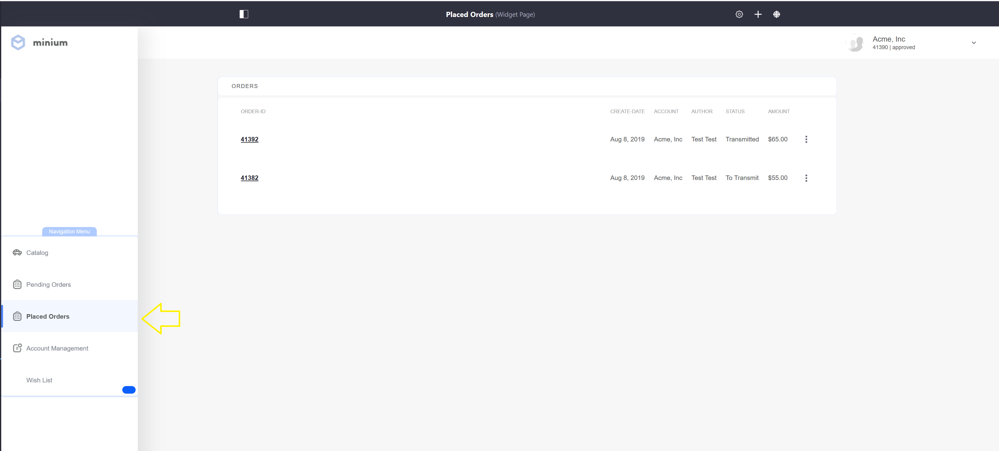
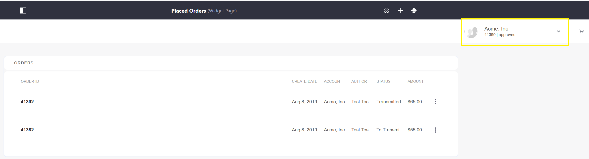
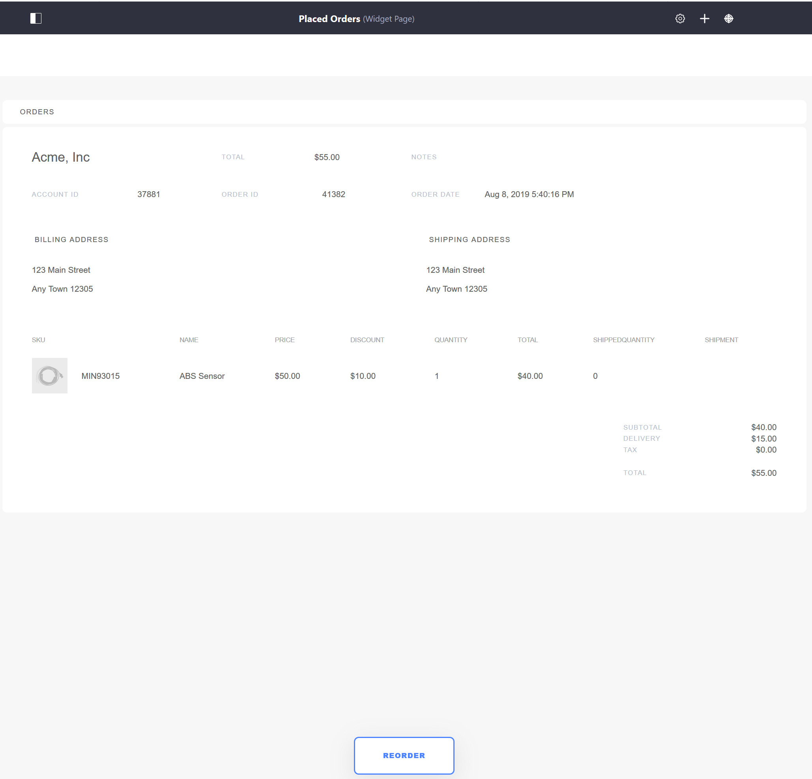

Placed Orders¶
The Placed Orders page is a required page that displays all orders that have completed the checkout process per account regardless of order status. The page uses the Orders widget.
If using the Minium Accelerator to create sample data, the Placed Order page has already been created and can be found in the site Navigation Menu.

The widget lists all orders associated with a particular account.

Individual order summaries may be viewed by clicking the related Order ID link. The Reorder button allows buyers to order the item without having to browse through the catalog again.
